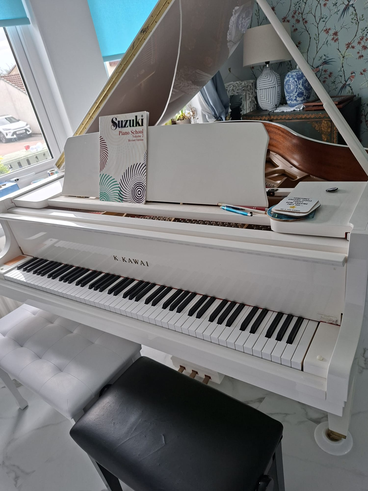
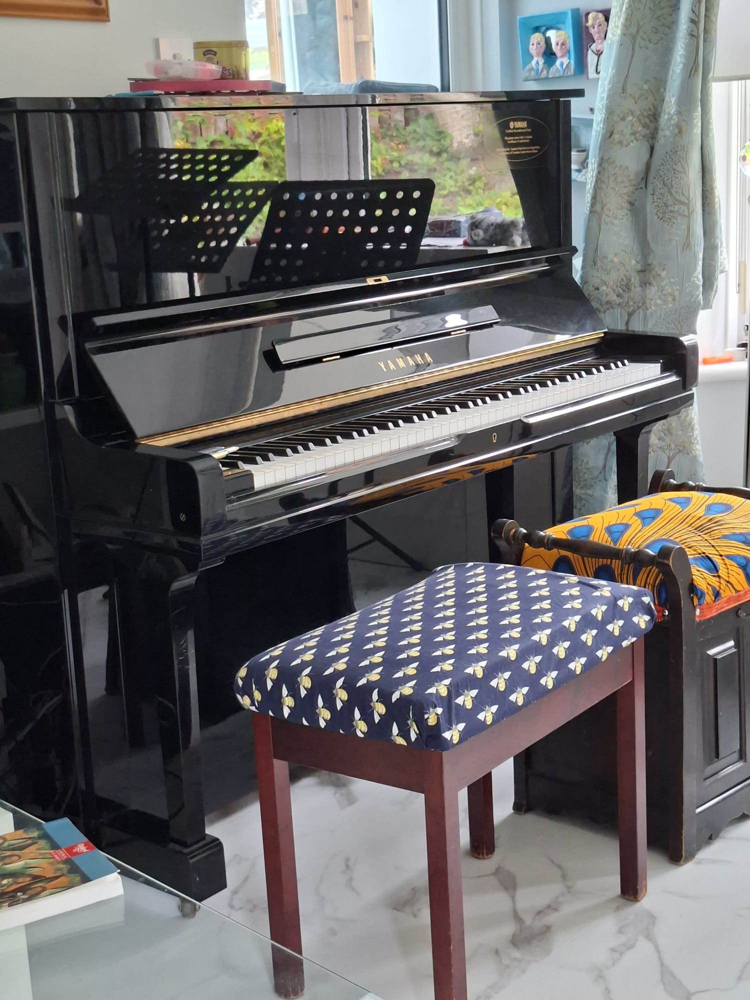
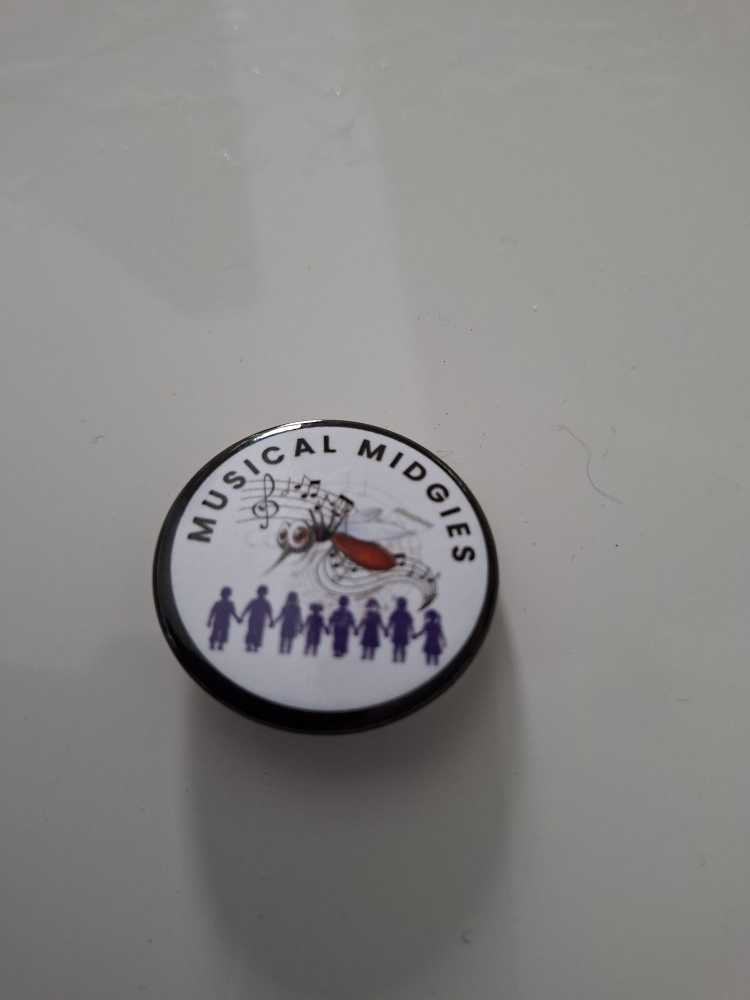

One-to-one singing
Build healthy vocal technique, musical expression, confidence and performance skills in lessons tailored to your voice.
- Beginner to Grade 8+
- Ages 6 to adult
- £40 per hour
Singing and piano tuition in Westhill
Friendly, expert music tuition for learners aged six to adult across Aberdeen and wider Aberdeenshire.
Meet your teacher
Morag Simpson is a highly experienced and enthusiastic music teacher who has spent more than 40 years helping pupils develop their musicianship, confidence and enjoyment of performing. She is a member of the Royal Society of Musicians and the Musicians’ Union.
Alongside her teaching at OneSchool Global in Balmedie, Morag specialises in singing and piano tuition and directs several successful local choirs. Lessons are supportive, purposeful and shaped around each pupil—whether they are taking their first musical steps, preparing for an exam or returning to music as an adult.
Lessons for every age and ability
Individual tuition is available for pupils aged six through to adult, from complete beginners to Grade 8 and beyond.
Build healthy vocal technique, musical expression, confidence and performance skills in lessons tailored to your voice.
Develop strong foundations in technique, reading, rhythm and musical interpretation at a pace that suits you.
Enjoy the energy of singing together while building musicianship, harmony, confidence and lasting friendships.
Inside the music
From first notes at the piano to the shared energy of singing together, music grows in welcoming, creative spaces.



A supportive approach
Every pupil starts in a different place. Lessons are shaped around your goals, experience and the music you want to make.
Share your experience, musical interests and whether you are learning for enjoyment, an exam or a performance.
Morag will recommend a lesson format and starting point suited to your age, ability and confidence.
Develop technique and musicianship through focused, encouraging tuition with clear next steps between lessons.
“Thanks for all the good memories that I will cherish… You have taught me so much about music… I will always cherish music and that is thanks to you, for the most wonderful part of my childhood. This is au revoir, not adieu!”
Start your musical journey
Ask about lesson availability, choir places or the right starting point for you or your child.